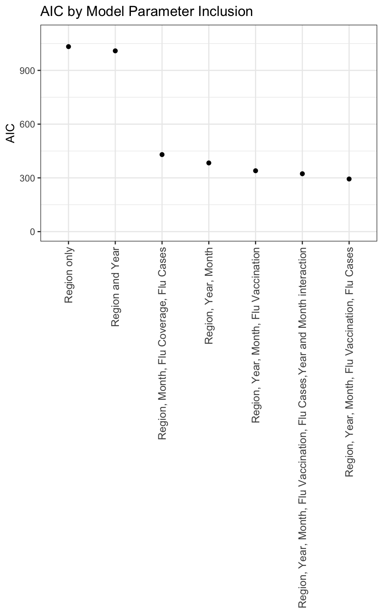
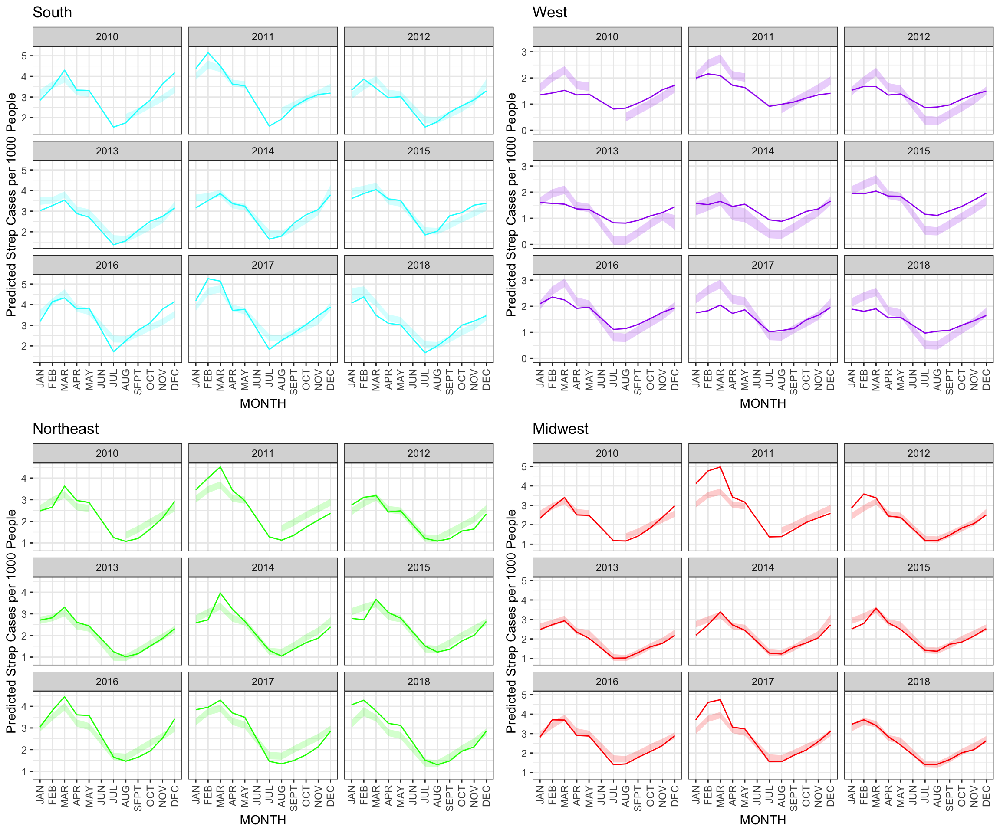

I will fit a number of models in order to better understand drivers of regional patterns of streptococcal pharyngitis. First, I will consider all years and all months, to look for a temporal trend. I will then add in covariates on flu cases and vaccination. I am using a linear model because my streptococcal pharyngitis cases are already reported as total counts for a given year, month, age, so we can assume that with large enough amounts of data, the errors will follow a normal distribution.
joint4 <- flu_by_month_regions_only |> select(-NVISITS, -NMEMB, -CI_per_ten_thousand, -CI_per_hundred_thousand) |> mutate(Flu_CI_per_thousand = CI_per_thousand) |> select(-CI_per_thousand)
strep_flu_vax_allages <- left_join(joint2,joint4) |> mutate(Strep_CI_per_thousand = CI_per_thousand) |> select(-CI_per_thousand, -Strep_CI_per_ten_thousand)## Joining, by = c("part", "YEAR", "MONTH")linmod1 <- lm(Strep_CI_per_thousand ~ part,strep_flu_vax_allages)
summary(linmod1)##
## Call:
## lm(formula = Strep_CI_per_thousand ~ part, data = strep_flu_vax_allages)
##
## Residuals:
## Min 1Q Median 3Q Max
## -1.65563 -0.56534 -0.00754 0.46248 2.61101
##
## Coefficients:
## Estimate Std. Error t value Pr(>|t|)
## (Intercept) 2.36347 0.07641 30.932 < 2e-16 ***
## partnortheast 0.04424 0.10806 0.409 0.682
## partsouth 0.66290 0.10806 6.135 1.95e-09 ***
## partwest -0.91792 0.10806 -8.495 3.32e-16 ***
## ---
## Signif. codes: 0 '***' 0.001 '**' 0.01 '*' 0.05 '.' 0.1 ' ' 1
##
## Residual standard error: 0.7941 on 428 degrees of freedom
## Multiple R-squared: 0.3375, Adjusted R-squared: 0.3328
## F-statistic: 72.67 on 3 and 428 DF, p-value: < 2.2e-16strep_flu_vax_allages |> mutate(pred = predict(linmod1, strep_flu_vax_allages)) |> summarize(RMSE = sqrt(mean(pred - Strep_CI_per_thousand)^2))## RMSE
## 1 9.969183e-16#RMSE 9.969183e-16, R^2: 0.3375, adjusted R^2 0.3328
#try adding in covariates
#add year
linmod2 <- lm(Strep_CI_per_thousand ~ part + as.factor(YEAR), strep_flu_vax_allages)
summary(linmod2) #RMSE 1.040379e-15; R^2 0.3955, Adjusted R^2 0.3797##
## Call:
## lm(formula = Strep_CI_per_thousand ~ part + as.factor(YEAR),
## data = strep_flu_vax_allages)
##
## Residuals:
## Min 1Q Median 3Q Max
## -1.64156 -0.57117 0.04287 0.47196 2.40249
##
## Coefficients:
## Estimate Std. Error t value Pr(>|t|)
## (Intercept) 2.22631 0.12762 17.446 < 2e-16 ***
## partnortheast 0.04424 0.10420 0.425 0.67137
## partsouth 0.66290 0.10420 6.362 5.21e-10 ***
## partwest -0.91792 0.10420 -8.809 < 2e-16 ***
## as.factor(YEAR)2011 0.34568 0.15630 2.212 0.02753 *
## as.factor(YEAR)2012 -0.10334 0.15630 -0.661 0.50885
## as.factor(YEAR)2013 -0.24430 0.15630 -1.563 0.11880
## as.factor(YEAR)2014 -0.02084 0.15630 -0.133 0.89397
## as.factor(YEAR)2015 0.15692 0.15630 1.004 0.31596
## as.factor(YEAR)2016 0.40477 0.15630 2.590 0.00994 **
## as.factor(YEAR)2017 0.49114 0.15630 3.142 0.00179 **
## as.factor(YEAR)2018 0.20437 0.15630 1.308 0.19173
## ---
## Signif. codes: 0 '***' 0.001 '**' 0.01 '*' 0.05 '.' 0.1 ' ' 1
##
## Residual standard error: 0.7657 on 420 degrees of freedom
## Multiple R-squared: 0.3955, Adjusted R-squared: 0.3797
## F-statistic: 24.98 on 11 and 420 DF, p-value: < 2.2e-16strep_flu_vax_allages |> mutate(pred = predict(linmod2, strep_flu_vax_allages)) |> summarize(RMSE = sqrt(mean(pred - Strep_CI_per_thousand)^2)) ## RMSE
## 1 1.040379e-15#add month
linmod3 <- lm(Strep_CI_per_thousand ~ part + as.factor(YEAR) + as.factor(MONTH),strep_flu_vax_allages)
summary(linmod3) #RMSE 1.345368e-15 R^2 0.865, adjusted R^2 0.8578##
## Call:
## lm(formula = Strep_CI_per_thousand ~ part + as.factor(YEAR) +
## as.factor(MONTH), data = strep_flu_vax_allages)
##
## Residuals:
## Min 1Q Median 3Q Max
## -0.84857 -0.22221 -0.03956 0.21749 1.33461
##
## Coefficients:
## Estimate Std. Error t value Pr(>|t|)
## (Intercept) 2.74207 0.08460 32.413 < 2e-16 ***
## partnortheast 0.04424 0.04989 0.887 0.37578
## partsouth 0.66290 0.04989 13.287 < 2e-16 ***
## partwest -0.91792 0.04989 -18.398 < 2e-16 ***
## as.factor(YEAR)2011 0.34568 0.07484 4.619 5.17e-06 ***
## as.factor(YEAR)2012 -0.10334 0.07484 -1.381 0.16807
## as.factor(YEAR)2013 -0.24430 0.07484 -3.264 0.00119 **
## as.factor(YEAR)2014 -0.02084 0.07484 -0.279 0.78075
## as.factor(YEAR)2015 0.15692 0.07484 2.097 0.03663 *
## as.factor(YEAR)2016 0.40477 0.07484 5.409 1.08e-07 ***
## as.factor(YEAR)2017 0.49114 0.07484 6.563 1.60e-10 ***
## as.factor(YEAR)2018 0.20437 0.07484 2.731 0.00659 **
## as.factor(MONTH)2 0.36148 0.08642 4.183 3.52e-05 ***
## as.factor(MONTH)3 0.55212 0.08642 6.389 4.55e-10 ***
## as.factor(MONTH)4 -0.09788 0.08642 -1.133 0.25802
## as.factor(MONTH)5 -0.20374 0.08642 -2.358 0.01886 *
## as.factor(MONTH)6 -1.01403 0.08642 -11.734 < 2e-16 ***
## as.factor(MONTH)7 -1.50414 0.08642 -17.406 < 2e-16 ***
## as.factor(MONTH)8 -1.47565 0.08642 -17.076 < 2e-16 ***
## as.factor(MONTH)9 -1.19162 0.08642 -13.789 < 2e-16 ***
## as.factor(MONTH)10 -0.87726 0.08642 -10.152 < 2e-16 ***
## as.factor(MONTH)11 -0.57884 0.08642 -6.698 6.99e-11 ***
## as.factor(MONTH)12 -0.15952 0.08642 -1.846 0.06562 .
## ---
## Signif. codes: 0 '***' 0.001 '**' 0.01 '*' 0.05 '.' 0.1 ' ' 1
##
## Residual standard error: 0.3666 on 409 degrees of freedom
## Multiple R-squared: 0.865, Adjusted R-squared: 0.8578
## F-statistic: 119.2 on 22 and 409 DF, p-value: < 2.2e-16strep_flu_vax_allages |> mutate(pred = predict(linmod3, strep_flu_vax_allages)) |> summarize(RMSE = sqrt(mean(pred - Strep_CI_per_thousand)^2)) ## RMSE
## 1 1.345368e-15#adding in flu vaccination coverage
linmod4 <- lm(Strep_CI_per_thousand ~ part + as.factor(YEAR) + as.factor(MONTH) + flu_coverage, strep_flu_vax_allages)
summary(linmod4) #RMSE 2.252061e-15 R^2 0.873, adjusted R^2 0.8654##
## Call:
## lm(formula = Strep_CI_per_thousand ~ part + as.factor(YEAR) +
## as.factor(MONTH) + flu_coverage, data = strep_flu_vax_allages)
##
## Residuals:
## Min 1Q Median 3Q Max
## -0.90610 -0.20920 -0.04195 0.20336 1.28708
##
## Coefficients:
## Estimate Std. Error t value Pr(>|t|)
## (Intercept) 1.890275 0.233451 8.097 8.50e-15 ***
## partnortheast -0.044889 0.053839 -0.834 0.404966
## partsouth 0.695330 0.052186 13.324 < 2e-16 ***
## partwest -0.915061 0.053830 -16.999 < 2e-16 ***
## as.factor(YEAR)2011 0.345045 0.082101 4.203 3.32e-05 ***
## as.factor(YEAR)2012 -0.134378 0.080314 -1.673 0.095151 .
## as.factor(YEAR)2013 -0.316777 0.082157 -3.856 0.000136 ***
## as.factor(YEAR)2014 -0.058882 0.080232 -0.734 0.463485
## as.factor(YEAR)2015 0.042019 0.084112 0.500 0.617685
## as.factor(YEAR)2016 0.319786 0.083085 3.849 0.000140 ***
## as.factor(YEAR)2017 0.422531 0.082257 5.137 4.56e-07 ***
## as.factor(YEAR)2018 0.149792 0.081422 1.840 0.066624 .
## as.factor(MONTH)2 0.326929 0.086090 3.798 0.000171 ***
## as.factor(MONTH)3 0.500453 0.086636 5.777 1.63e-08 ***
## as.factor(MONTH)4 -0.160344 0.087089 -1.841 0.066411 .
## as.factor(MONTH)5 -0.272347 0.087384 -3.117 0.001974 **
## as.factor(MONTH)7 -0.550812 0.249448 -2.208 0.027857 *
## as.factor(MONTH)8 -0.607732 0.235540 -2.580 0.010265 *
## as.factor(MONTH)9 -0.484704 0.198176 -2.446 0.014924 *
## as.factor(MONTH)10 -0.563330 0.116764 -4.825 2.07e-06 ***
## as.factor(MONTH)11 -0.478603 0.089316 -5.359 1.49e-07 ***
## as.factor(MONTH)12 -0.121000 0.086197 -1.404 0.161240
## flu_coverage 0.022859 0.005779 3.956 9.17e-05 ***
## ---
## Signif. codes: 0 '***' 0.001 '**' 0.01 '*' 0.05 '.' 0.1 ' ' 1
##
## Residual standard error: 0.3634 on 365 degrees of freedom
## (44 observations deleted due to missingness)
## Multiple R-squared: 0.873, Adjusted R-squared: 0.8654
## F-statistic: 114.1 on 22 and 365 DF, p-value: < 2.2e-16strep_flu_vax_allages_nojune <- strep_flu_vax_allages |> filter(MONTH != 6)
strep_flu_vax_allages_nojune |> mutate(pred = predict(linmod4, strep_flu_vax_allages_nojune)) |> summarize(RMSE = sqrt(mean(pred - Strep_CI_per_thousand, na.rm = TRUE)^2)) ## RMSE
## 1 2.252061e-15#adding in flu CI as well
linmod5 <- lm(Strep_CI_per_thousand ~ part + as.factor(YEAR) + as.factor(MONTH) + flu_coverage + Flu_CI_per_thousand,strep_flu_vax_allages)
summary(linmod5) #RMSE 1.86077e-15 R^2 0.8878, adjusted R^2 0.8807##
## Call:
## lm(formula = Strep_CI_per_thousand ~ part + as.factor(YEAR) +
## as.factor(MONTH) + flu_coverage + Flu_CI_per_thousand, data = strep_flu_vax_allages)
##
## Residuals:
## Min 1Q Median 3Q Max
## -0.80355 -0.23108 -0.03576 0.21025 1.27994
##
## Coefficients:
## Estimate Std. Error t value Pr(>|t|)
## (Intercept) 1.728584 0.220978 7.822 5.67e-14 ***
## partnortheast -0.044293 0.050678 -0.874 0.382690
## partsouth 0.610911 0.050611 12.071 < 2e-16 ***
## partwest -0.903844 0.050695 -17.829 < 2e-16 ***
## as.factor(YEAR)2011 0.302584 0.077523 3.903 0.000113 ***
## as.factor(YEAR)2012 -0.173641 0.075810 -2.290 0.022564 *
## as.factor(YEAR)2013 -0.400015 0.078261 -5.111 5.18e-07 ***
## as.factor(YEAR)2014 -0.144946 0.076536 -1.894 0.059041 .
## as.factor(YEAR)2015 -0.018876 0.079659 -0.237 0.812817
## as.factor(YEAR)2016 0.268352 0.078558 3.416 0.000707 ***
## as.factor(YEAR)2017 0.319501 0.078843 4.052 6.20e-05 ***
## as.factor(YEAR)2018 -0.020557 0.080491 -0.255 0.798557
## as.factor(MONTH)2 0.354293 0.081130 4.367 1.64e-05 ***
## as.factor(MONTH)3 0.619944 0.083353 7.438 7.43e-13 ***
## as.factor(MONTH)4 0.060588 0.087963 0.689 0.491394
## as.factor(MONTH)5 -0.009920 0.090561 -0.110 0.912839
## as.factor(MONTH)7 -0.290966 0.237778 -1.224 0.221862
## as.factor(MONTH)8 -0.361666 0.224537 -1.611 0.108108
## as.factor(MONTH)9 -0.238829 0.189887 -1.258 0.209290
## as.factor(MONTH)10 -0.313726 0.115665 -2.712 0.006998 **
## as.factor(MONTH)11 -0.240972 0.090803 -2.654 0.008308 **
## as.factor(MONTH)12 -0.016496 0.082527 -0.200 0.841683
## flu_coverage 0.022102 0.005441 4.062 5.95e-05 ***
## Flu_CI_per_thousand 0.082167 0.011864 6.926 1.97e-11 ***
## ---
## Signif. codes: 0 '***' 0.001 '**' 0.01 '*' 0.05 '.' 0.1 ' ' 1
##
## Residual standard error: 0.342 on 364 degrees of freedom
## (44 observations deleted due to missingness)
## Multiple R-squared: 0.8878, Adjusted R-squared: 0.8807
## F-statistic: 125.3 on 23 and 364 DF, p-value: < 2.2e-16strep_flu_vax_allages_nojune |> mutate(pred = predict(linmod5, strep_flu_vax_allages_nojune)) |> summarize(RMSE = sqrt(mean(pred - Strep_CI_per_thousand, na.rm = TRUE)^2)) ## RMSE
## 1 1.86077e-15#try a month and year interaction term
linmod6 <- lm(Strep_CI_per_thousand ~ part + as.factor(YEAR) + as.factor(MONTH) + flu_coverage + Flu_CI_per_thousand + as.factor(YEAR)*as.factor(MONTH),strep_flu_vax_allages)
summary(linmod6) #R^2 0.9191, adjusted R-squared 0.8905##
## Call:
## lm(formula = Strep_CI_per_thousand ~ part + as.factor(YEAR) +
## as.factor(MONTH) + flu_coverage + Flu_CI_per_thousand + as.factor(YEAR) *
## as.factor(MONTH), data = strep_flu_vax_allages)
##
## Residuals:
## Min 1Q Median 3Q Max
## -1.06179 -0.17758 -0.00135 0.18555 0.87743
##
## Coefficients: (2 not defined because of singularities)
## Estimate Std. Error t value Pr(>|t|)
## (Intercept) 1.543248 0.276599 5.579 5.60e-08
## partnortheast -0.040916 0.049130 -0.833 0.405644
## partsouth 0.588731 0.050960 11.553 < 2e-16
## partwest -0.904142 0.049217 -18.371 < 2e-16
## as.factor(YEAR)2011 0.962687 0.235682 4.085 5.74e-05
## as.factor(YEAR)2012 0.327427 0.232651 1.407 0.160402
## as.factor(YEAR)2013 -0.422083 0.252258 -1.673 0.095377
## as.factor(YEAR)2014 -0.235606 0.239988 -0.982 0.327057
## as.factor(YEAR)2015 -0.157326 0.251235 -0.626 0.531678
## as.factor(YEAR)2016 0.406794 0.234764 1.733 0.084213
## as.factor(YEAR)2017 0.760760 0.239004 3.183 0.001618
## as.factor(YEAR)2018 0.120924 0.291078 0.415 0.678134
## as.factor(MONTH)2 0.330922 0.231964 1.427 0.154784
## as.factor(MONTH)3 0.923072 0.232218 3.975 8.92e-05
## as.factor(MONTH)4 0.272326 0.232485 1.171 0.242425
## as.factor(MONTH)5 0.249307 0.232614 1.072 0.284730
## as.factor(MONTH)7 -0.202633 0.378497 -0.535 0.592815
## as.factor(MONTH)8 -0.280827 0.314686 -0.892 0.372926
## as.factor(MONTH)9 -0.115880 0.290283 -0.399 0.690046
## as.factor(MONTH)10 -0.084947 0.242100 -0.351 0.725941
## as.factor(MONTH)11 0.227960 0.231935 0.983 0.326506
## as.factor(MONTH)12 0.624044 0.232110 2.689 0.007597
## flu_coverage 0.020504 0.006138 3.340 0.000948
## Flu_CI_per_thousand 0.103514 0.019039 5.437 1.16e-07
## as.factor(YEAR)2011:as.factor(MONTH)2 0.030065 0.328871 0.091 0.927225
## as.factor(YEAR)2012:as.factor(MONTH)2 0.042104 0.327878 0.128 0.897911
## as.factor(YEAR)2013:as.factor(MONTH)2 0.066381 0.331846 0.200 0.841595
## as.factor(YEAR)2014:as.factor(MONTH)2 0.122087 0.330382 0.370 0.712003
## as.factor(YEAR)2015:as.factor(MONTH)2 -0.008194 0.330470 -0.025 0.980235
## as.factor(YEAR)2016:as.factor(MONTH)2 0.184194 0.329381 0.559 0.576454
## as.factor(YEAR)2017:as.factor(MONTH)2 -0.034383 0.330072 -0.104 0.917108
## as.factor(YEAR)2018:as.factor(MONTH)2 -0.108867 0.328107 -0.332 0.740280
## as.factor(YEAR)2011:as.factor(MONTH)3 -0.340879 0.328065 -1.039 0.299654
## as.factor(YEAR)2012:as.factor(MONTH)3 -0.759420 0.328350 -2.313 0.021442
## as.factor(YEAR)2013:as.factor(MONTH)3 -0.223987 0.334613 -0.669 0.503785
## as.factor(YEAR)2014:as.factor(MONTH)3 0.179191 0.332005 0.540 0.589808
## as.factor(YEAR)2015:as.factor(MONTH)3 -0.019702 0.332825 -0.059 0.952837
## as.factor(YEAR)2016:as.factor(MONTH)3 -0.396736 0.333285 -1.190 0.234884
## as.factor(YEAR)2017:as.factor(MONTH)3 -0.365106 0.328063 -1.113 0.266679
## as.factor(YEAR)2018:as.factor(MONTH)3 -0.493602 0.352168 -1.402 0.162117
## as.factor(YEAR)2011:as.factor(MONTH)4 -0.541251 0.329375 -1.643 0.101427
## as.factor(YEAR)2012:as.factor(MONTH)4 -0.656282 0.327923 -2.001 0.046301
## as.factor(YEAR)2013:as.factor(MONTH)4 0.020070 0.338584 0.059 0.952773
## as.factor(YEAR)2014:as.factor(MONTH)4 0.315148 0.331684 0.950 0.342841
## as.factor(YEAR)2015:as.factor(MONTH)4 0.231238 0.335678 0.689 0.491464
## as.factor(YEAR)2016:as.factor(MONTH)4 -0.145758 0.328598 -0.444 0.657685
## as.factor(YEAR)2017:as.factor(MONTH)4 -0.447447 0.328344 -1.363 0.174037
## as.factor(YEAR)2018:as.factor(MONTH)4 -0.130290 0.364199 -0.358 0.720799
## as.factor(YEAR)2011:as.factor(MONTH)5 -0.726542 0.329607 -2.204 0.028302
## as.factor(YEAR)2012:as.factor(MONTH)5 -0.594764 0.327831 -1.814 0.070689
## as.factor(YEAR)2013:as.factor(MONTH)5 -0.087772 0.340570 -0.258 0.796807
## as.factor(YEAR)2014:as.factor(MONTH)5 0.169968 0.332962 0.510 0.610115
## as.factor(YEAR)2015:as.factor(MONTH)5 0.130982 0.337530 0.388 0.698260
## as.factor(YEAR)2016:as.factor(MONTH)5 -0.029042 0.327821 -0.089 0.929470
## as.factor(YEAR)2017:as.factor(MONTH)5 -0.365097 0.329659 -1.107 0.269010
## as.factor(YEAR)2018:as.factor(MONTH)5 -0.179294 0.370262 -0.484 0.628590
## as.factor(YEAR)2011:as.factor(MONTH)7 NA NA NA NA
## as.factor(YEAR)2012:as.factor(MONTH)7 -0.388897 0.374169 -1.039 0.299514
## as.factor(YEAR)2013:as.factor(MONTH)7 0.267329 0.338453 0.790 0.430266
## as.factor(YEAR)2014:as.factor(MONTH)7 0.258901 0.346935 0.746 0.456128
## as.factor(YEAR)2015:as.factor(MONTH)7 0.369849 0.342179 1.081 0.280668
## as.factor(YEAR)2016:as.factor(MONTH)7 -0.205075 0.372297 -0.551 0.582176
## as.factor(YEAR)2017:as.factor(MONTH)7 -0.564943 0.355741 -1.588 0.113375
## as.factor(YEAR)2018:as.factor(MONTH)7 NA NA NA NA
## as.factor(YEAR)2011:as.factor(MONTH)8 -0.818716 0.330377 -2.478 0.013785
## as.factor(YEAR)2012:as.factor(MONTH)8 -0.315942 0.328075 -0.963 0.336353
## as.factor(YEAR)2013:as.factor(MONTH)8 0.292764 0.341963 0.856 0.392644
## as.factor(YEAR)2014:as.factor(MONTH)8 0.250186 0.333616 0.750 0.453918
## as.factor(YEAR)2015:as.factor(MONTH)8 0.363768 0.341021 1.067 0.287005
## as.factor(YEAR)2016:as.factor(MONTH)8 -0.063651 0.329102 -0.193 0.846777
## as.factor(YEAR)2017:as.factor(MONTH)8 -0.432153 0.332135 -1.301 0.194259
## as.factor(YEAR)2018:as.factor(MONTH)8 0.092494 0.371887 0.249 0.803759
## as.factor(YEAR)2011:as.factor(MONTH)9 -0.812559 0.330161 -2.461 0.014442
## as.factor(YEAR)2012:as.factor(MONTH)9 -0.388693 0.327974 -1.185 0.236948
## as.factor(YEAR)2013:as.factor(MONTH)9 0.227723 0.341399 0.667 0.505291
## as.factor(YEAR)2014:as.factor(MONTH)9 0.287408 0.333616 0.861 0.389687
## as.factor(YEAR)2015:as.factor(MONTH)9 0.400440 0.340522 1.176 0.240589
## as.factor(YEAR)2016:as.factor(MONTH)9 -0.094366 0.328422 -0.287 0.774066
## as.factor(YEAR)2017:as.factor(MONTH)9 -0.521589 0.331606 -1.573 0.116843
## as.factor(YEAR)2018:as.factor(MONTH)9 -0.020189 0.371482 -0.054 0.956696
## as.factor(YEAR)2011:as.factor(MONTH)10 -0.882328 0.330346 -2.671 0.007998
## as.factor(YEAR)2012:as.factor(MONTH)10 -0.448736 0.328276 -1.367 0.172715
## as.factor(YEAR)2013:as.factor(MONTH)10 0.129053 0.340790 0.379 0.705200
## as.factor(YEAR)2014:as.factor(MONTH)10 0.150621 0.333692 0.451 0.652059
## as.factor(YEAR)2015:as.factor(MONTH)10 0.213589 0.340360 0.628 0.530807
## as.factor(YEAR)2016:as.factor(MONTH)10 -0.189450 0.328436 -0.577 0.564513
## as.factor(YEAR)2017:as.factor(MONTH)10 -0.563762 0.332706 -1.694 0.091264
## as.factor(YEAR)2018:as.factor(MONTH)10 -0.057643 0.370772 -0.155 0.876563
## as.factor(YEAR)2011:as.factor(MONTH)11 -1.149382 0.330961 -3.473 0.000595
## as.factor(YEAR)2012:as.factor(MONTH)11 -0.804015 0.328754 -2.446 0.015062
## as.factor(YEAR)2013:as.factor(MONTH)11 -0.180816 0.340550 -0.531 0.595865
## as.factor(YEAR)2014:as.factor(MONTH)11 -0.218372 0.332265 -0.657 0.511567
## as.factor(YEAR)2015:as.factor(MONTH)11 -0.004147 0.341163 -0.012 0.990310
## as.factor(YEAR)2016:as.factor(MONTH)11 -0.244122 0.328878 -0.742 0.458521
## as.factor(YEAR)2017:as.factor(MONTH)11 -0.718300 0.334079 -2.150 0.032387
## as.factor(YEAR)2018:as.factor(MONTH)11 -0.400927 0.370456 -1.082 0.280052
## as.factor(YEAR)2011:as.factor(MONTH)12 -1.441149 0.332430 -4.335 2.02e-05
## as.factor(YEAR)2012:as.factor(MONTH)12 -1.163066 0.333482 -3.488 0.000564
## as.factor(YEAR)2013:as.factor(MONTH)12 -0.333352 0.339048 -0.983 0.326340
## as.factor(YEAR)2014:as.factor(MONTH)12 -0.619339 0.329146 -1.882 0.060899
## as.factor(YEAR)2015:as.factor(MONTH)12 -0.138001 0.343330 -0.402 0.688022
## as.factor(YEAR)2016:as.factor(MONTH)12 -0.303983 0.328636 -0.925 0.355755
## as.factor(YEAR)2017:as.factor(MONTH)12 -0.961910 0.332460 -2.893 0.004105
## as.factor(YEAR)2018:as.factor(MONTH)12 -0.580961 0.365527 -1.589 0.113079
##
## (Intercept) ***
## partnortheast
## partsouth ***
## partwest ***
## as.factor(YEAR)2011 ***
## as.factor(YEAR)2012
## as.factor(YEAR)2013 .
## as.factor(YEAR)2014
## as.factor(YEAR)2015
## as.factor(YEAR)2016 .
## as.factor(YEAR)2017 **
## as.factor(YEAR)2018
## as.factor(MONTH)2
## as.factor(MONTH)3 ***
## as.factor(MONTH)4
## as.factor(MONTH)5
## as.factor(MONTH)7
## as.factor(MONTH)8
## as.factor(MONTH)9
## as.factor(MONTH)10
## as.factor(MONTH)11
## as.factor(MONTH)12 **
## flu_coverage ***
## Flu_CI_per_thousand ***
## as.factor(YEAR)2011:as.factor(MONTH)2
## as.factor(YEAR)2012:as.factor(MONTH)2
## as.factor(YEAR)2013:as.factor(MONTH)2
## as.factor(YEAR)2014:as.factor(MONTH)2
## as.factor(YEAR)2015:as.factor(MONTH)2
## as.factor(YEAR)2016:as.factor(MONTH)2
## as.factor(YEAR)2017:as.factor(MONTH)2
## as.factor(YEAR)2018:as.factor(MONTH)2
## as.factor(YEAR)2011:as.factor(MONTH)3
## as.factor(YEAR)2012:as.factor(MONTH)3 *
## as.factor(YEAR)2013:as.factor(MONTH)3
## as.factor(YEAR)2014:as.factor(MONTH)3
## as.factor(YEAR)2015:as.factor(MONTH)3
## as.factor(YEAR)2016:as.factor(MONTH)3
## as.factor(YEAR)2017:as.factor(MONTH)3
## as.factor(YEAR)2018:as.factor(MONTH)3
## as.factor(YEAR)2011:as.factor(MONTH)4
## as.factor(YEAR)2012:as.factor(MONTH)4 *
## as.factor(YEAR)2013:as.factor(MONTH)4
## as.factor(YEAR)2014:as.factor(MONTH)4
## as.factor(YEAR)2015:as.factor(MONTH)4
## as.factor(YEAR)2016:as.factor(MONTH)4
## as.factor(YEAR)2017:as.factor(MONTH)4
## as.factor(YEAR)2018:as.factor(MONTH)4
## as.factor(YEAR)2011:as.factor(MONTH)5 *
## as.factor(YEAR)2012:as.factor(MONTH)5 .
## as.factor(YEAR)2013:as.factor(MONTH)5
## as.factor(YEAR)2014:as.factor(MONTH)5
## as.factor(YEAR)2015:as.factor(MONTH)5
## as.factor(YEAR)2016:as.factor(MONTH)5
## as.factor(YEAR)2017:as.factor(MONTH)5
## as.factor(YEAR)2018:as.factor(MONTH)5
## as.factor(YEAR)2011:as.factor(MONTH)7
## as.factor(YEAR)2012:as.factor(MONTH)7
## as.factor(YEAR)2013:as.factor(MONTH)7
## as.factor(YEAR)2014:as.factor(MONTH)7
## as.factor(YEAR)2015:as.factor(MONTH)7
## as.factor(YEAR)2016:as.factor(MONTH)7
## as.factor(YEAR)2017:as.factor(MONTH)7
## as.factor(YEAR)2018:as.factor(MONTH)7
## as.factor(YEAR)2011:as.factor(MONTH)8 *
## as.factor(YEAR)2012:as.factor(MONTH)8
## as.factor(YEAR)2013:as.factor(MONTH)8
## as.factor(YEAR)2014:as.factor(MONTH)8
## as.factor(YEAR)2015:as.factor(MONTH)8
## as.factor(YEAR)2016:as.factor(MONTH)8
## as.factor(YEAR)2017:as.factor(MONTH)8
## as.factor(YEAR)2018:as.factor(MONTH)8
## as.factor(YEAR)2011:as.factor(MONTH)9 *
## as.factor(YEAR)2012:as.factor(MONTH)9
## as.factor(YEAR)2013:as.factor(MONTH)9
## as.factor(YEAR)2014:as.factor(MONTH)9
## as.factor(YEAR)2015:as.factor(MONTH)9
## as.factor(YEAR)2016:as.factor(MONTH)9
## as.factor(YEAR)2017:as.factor(MONTH)9
## as.factor(YEAR)2018:as.factor(MONTH)9
## as.factor(YEAR)2011:as.factor(MONTH)10 **
## as.factor(YEAR)2012:as.factor(MONTH)10
## as.factor(YEAR)2013:as.factor(MONTH)10
## as.factor(YEAR)2014:as.factor(MONTH)10
## as.factor(YEAR)2015:as.factor(MONTH)10
## as.factor(YEAR)2016:as.factor(MONTH)10
## as.factor(YEAR)2017:as.factor(MONTH)10 .
## as.factor(YEAR)2018:as.factor(MONTH)10
## as.factor(YEAR)2011:as.factor(MONTH)11 ***
## as.factor(YEAR)2012:as.factor(MONTH)11 *
## as.factor(YEAR)2013:as.factor(MONTH)11
## as.factor(YEAR)2014:as.factor(MONTH)11
## as.factor(YEAR)2015:as.factor(MONTH)11
## as.factor(YEAR)2016:as.factor(MONTH)11
## as.factor(YEAR)2017:as.factor(MONTH)11 *
## as.factor(YEAR)2018:as.factor(MONTH)11
## as.factor(YEAR)2011:as.factor(MONTH)12 ***
## as.factor(YEAR)2012:as.factor(MONTH)12 ***
## as.factor(YEAR)2013:as.factor(MONTH)12
## as.factor(YEAR)2014:as.factor(MONTH)12 .
## as.factor(YEAR)2015:as.factor(MONTH)12
## as.factor(YEAR)2016:as.factor(MONTH)12
## as.factor(YEAR)2017:as.factor(MONTH)12 **
## as.factor(YEAR)2018:as.factor(MONTH)12
## ---
## Signif. codes: 0 '***' 0.001 '**' 0.01 '*' 0.05 '.' 0.1 ' ' 1
##
## Residual standard error: 0.3277 on 286 degrees of freedom
## (44 observations deleted due to missingness)
## Multiple R-squared: 0.9191, Adjusted R-squared: 0.8905
## F-statistic: 32.16 on 101 and 286 DF, p-value: < 2.2e-16#likelihood ratio test of full model with interactions vs without
lrtest(linmod5, linmod6) #p value of 0.0004; this thinks the interaction term is better## Likelihood ratio test
##
## Model 1: Strep_CI_per_thousand ~ part + as.factor(YEAR) + as.factor(MONTH) +
## flu_coverage + Flu_CI_per_thousand
## Model 2: Strep_CI_per_thousand ~ part + as.factor(YEAR) + as.factor(MONTH) +
## flu_coverage + Flu_CI_per_thousand + as.factor(YEAR) * as.factor(MONTH)
## #Df LogLik Df Chisq Pr(>Chisq)
## 1 25 -121.886
## 2 103 -58.544 78 126.68 0.0004103 ***
## ---
## Signif. codes: 0 '***' 0.001 '**' 0.01 '*' 0.05 '.' 0.1 ' ' 1#now test full model against model with just region, year, and month in it
#what other fit assessments should I do? 
#now try to fit the model just for those 3 years that has the PCV data as well, just for 5-9 years old
flu_by_month_regions_5 <- flu_by_month_regions |> filter(AGEGRP %in% c("05_09"))
flu_by_month_regions_5_vis <- aggregate(NVISITS ~ part + YEAR + MONTH,
dat = flu_by_month_regions_5,
sum)
flu_by_month_regions_5_memb <- aggregate(NMEMB ~ part + YEAR + MONTH,
dat = flu_by_month_regions_5,
sum)
flu_by_month_regions_5 <- left_join(flu_by_month_regions_5_vis, flu_by_month_regions_5_memb)## Joining, by = c("part", "YEAR", "MONTH")flu_by_month_regions_5 <- flu_by_month_regions_5 |>
mutate("Flu_CI_per_thousand" = NVISITS/NMEMB *1000) |>
select(-NVISITS, -NMEMB)
#need to get flu_vax data just for 5-9 age group
#joint3 has flu coverage and strep data
strep_flu_vax_pcv_59 <- left_join(joint3, flu_by_month_regions_5) |>
left_join(strep_pcv) |>
filter(YEAR %in% c(2016, 2017, 2018)) |>
mutate(Strep_CI_per_thousand = CI_per_thousand) |>
select(-CI_per_thousand, -Strep_CI_per_ten_thousand, -Strep_CI_per_five_thousand, -Strep_CI_per_two_thousand, -Strep_CI_per_five_hundred)## Joining, by = c("part", "YEAR", "MONTH")
## Joining, by = c("part", "YEAR")#do same model fit process
pcv_mod1 <- lm(Strep_CI_per_thousand ~part, strep_flu_vax_pcv_59)
summary(pcv_mod1) #R^2 0.3098, adjusted R^2 0.295##
## Call:
## lm(formula = Strep_CI_per_thousand ~ part, data = strep_flu_vax_pcv_59)
##
## Residuals:
## Min 1Q Median 3Q Max
## -10.1614 -4.1494 -0.1053 2.9827 13.3578
##
## Coefficients:
## Estimate Std. Error t value Pr(>|t|)
## (Intercept) 12.1746 0.9237 13.180 < 2e-16 ***
## partnortheast 2.9385 1.3064 2.249 0.0261 *
## partsouth 2.9301 1.3064 2.243 0.0265 *
## partwest -6.0338 1.3064 -4.619 8.66e-06 ***
## ---
## Signif. codes: 0 '***' 0.001 '**' 0.01 '*' 0.05 '.' 0.1 ' ' 1
##
## Residual standard error: 5.542 on 140 degrees of freedom
## Multiple R-squared: 0.3098, Adjusted R-squared: 0.295
## F-statistic: 20.95 on 3 and 140 DF, p-value: 2.869e-11#add year
pcv_mod2 <- lm(Strep_CI_per_thousand ~part + as.factor(YEAR), strep_flu_vax_pcv_59)
summary(pcv_mod2) #R^2 0.3169, adjusted R^20.2922##
## Call:
## lm(formula = Strep_CI_per_thousand ~ part + as.factor(YEAR),
## data = strep_flu_vax_pcv_59)
##
## Residuals:
## Min 1Q Median 3Q Max
## -10.5080 -3.6351 0.1468 2.7201 13.2660
##
## Coefficients:
## Estimate Std. Error t value Pr(>|t|)
## (Intercept) 12.61119 1.13361 11.125 < 2e-16 ***
## partnortheast 2.93846 1.30898 2.245 0.0264 *
## partsouth 2.93013 1.30898 2.238 0.0268 *
## partwest -6.03380 1.30898 -4.610 9.1e-06 ***
## as.factor(YEAR)2017 -0.08995 1.13361 -0.079 0.9369
## as.factor(YEAR)2018 -1.21969 1.13361 -1.076 0.2838
## ---
## Signif. codes: 0 '***' 0.001 '**' 0.01 '*' 0.05 '.' 0.1 ' ' 1
##
## Residual standard error: 5.554 on 138 degrees of freedom
## Multiple R-squared: 0.3169, Adjusted R-squared: 0.2922
## F-statistic: 12.81 on 5 and 138 DF, p-value: 3.135e-10#add month
pcv_mod3 <- lm(Strep_CI_per_thousand ~part + as.factor(YEAR) + as.factor(MONTH), strep_flu_vax_pcv_59)
summary(pcv_mod3) #R^2 0.8539, adjusted R^2 0.8355##
## Call:
## lm(formula = Strep_CI_per_thousand ~ part + as.factor(YEAR) +
## as.factor(MONTH), data = strep_flu_vax_pcv_59)
##
## Residuals:
## Min 1Q Median 3Q Max
## -6.6931 -1.6276 -0.0071 1.6563 6.8508
##
## Coefficients:
## Estimate Std. Error t value Pr(>|t|)
## (Intercept) 16.73680 0.91988 18.195 < 2e-16 ***
## partnortheast 2.93846 0.63103 4.657 7.98e-06 ***
## partsouth 2.93013 0.63103 4.643 8.43e-06 ***
## partwest -6.03380 0.63103 -9.562 < 2e-16 ***
## as.factor(YEAR)2017 -0.08995 0.54649 -0.165 0.86953
## as.factor(YEAR)2018 -1.21969 0.54649 -2.232 0.02738 *
## as.factor(MONTH)2 3.63043 1.09298 3.322 0.00117 **
## as.factor(MONTH)3 3.01417 1.09298 2.758 0.00668 **
## as.factor(MONTH)4 -1.25962 1.09298 -1.152 0.25129
## as.factor(MONTH)5 -1.72863 1.09298 -1.582 0.11623
## as.factor(MONTH)6 -7.90102 1.09298 -7.229 4.03e-11 ***
## as.factor(MONTH)7 -11.30450 1.09298 -10.343 < 2e-16 ***
## as.factor(MONTH)8 -10.57484 1.09298 -9.675 < 2e-16 ***
## as.factor(MONTH)9 -8.70996 1.09298 -7.969 7.92e-13 ***
## as.factor(MONTH)10 -6.50374 1.09298 -5.950 2.44e-08 ***
## as.factor(MONTH)11 -5.23649 1.09298 -4.791 4.55e-06 ***
## as.factor(MONTH)12 -2.93308 1.09298 -2.684 0.00825 **
## ---
## Signif. codes: 0 '***' 0.001 '**' 0.01 '*' 0.05 '.' 0.1 ' ' 1
##
## Residual standard error: 2.677 on 127 degrees of freedom
## Multiple R-squared: 0.8539, Adjusted R-squared: 0.8355
## F-statistic: 46.39 on 16 and 127 DF, p-value: < 2.2e-16#add flu_coverage
pcv_mod4 <- lm(Strep_CI_per_thousand ~part + as.factor(YEAR) + as.factor(MONTH) + flu_coverage, strep_flu_vax_pcv_59)
summary(pcv_mod4) #R^2 is 0.8721, adjusted R^2 0.8544##
## Call:
## lm(formula = Strep_CI_per_thousand ~ part + as.factor(YEAR) +
## as.factor(MONTH) + flu_coverage, data = strep_flu_vax_pcv_59)
##
## Residuals:
## Min 1Q Median 3Q Max
## -6.6772 -1.4596 -0.0646 1.6463 6.2246
##
## Coefficients:
## Estimate Std. Error t value Pr(>|t|)
## (Intercept) -5.7299 5.7541 -0.996 0.321442
## partnortheast -0.4553 1.0092 -0.451 0.652776
## partsouth 2.7706 0.6352 4.362 2.83e-05 ***
## partwest -6.4378 0.6323 -10.181 < 2e-16 ***
## as.factor(YEAR)2017 0.3701 0.5591 0.662 0.509358
## as.factor(YEAR)2018 -1.4345 0.5500 -2.608 0.010315 *
## as.factor(MONTH)2 2.7409 1.0716 2.558 0.011836 *
## as.factor(MONTH)3 1.6103 1.1059 1.456 0.148115
## as.factor(MONTH)4 -2.9770 1.1336 -2.626 0.009811 **
## as.factor(MONTH)5 -3.5762 1.1465 -3.119 0.002292 **
## as.factor(MONTH)7 11.7867 5.9049 1.996 0.048287 *
## as.factor(MONTH)8 10.4618 5.3968 1.939 0.055012 .
## as.factor(MONTH)9 7.8232 4.2907 1.823 0.070857 .
## as.factor(MONTH)10 1.3465 2.2363 0.602 0.548293
## as.factor(MONTH)11 -2.2611 1.2880 -1.756 0.081835 .
## as.factor(MONTH)12 -1.8117 1.0853 -1.669 0.097773 .
## flu_coverage 0.4145 0.1043 3.974 0.000124 ***
## ---
## Signif. codes: 0 '***' 0.001 '**' 0.01 '*' 0.05 '.' 0.1 ' ' 1
##
## Residual standard error: 2.567 on 115 degrees of freedom
## (12 observations deleted due to missingness)
## Multiple R-squared: 0.8721, Adjusted R-squared: 0.8544
## F-statistic: 49.03 on 16 and 115 DF, p-value: < 2.2e-16#add flu cases
pcv_mod5 <- lm(Strep_CI_per_thousand ~part + as.factor(YEAR) + as.factor(MONTH) + flu_coverage + Flu_CI_per_thousand, strep_flu_vax_pcv_59)
summary(pcv_mod5) #R^2 0.8983, adjusted R^2 0.8831##
## Call:
## lm(formula = Strep_CI_per_thousand ~ part + as.factor(YEAR) +
## as.factor(MONTH) + flu_coverage + Flu_CI_per_thousand, data = strep_flu_vax_pcv_59)
##
## Residuals:
## Min 1Q Median 3Q Max
## -4.8956 -1.4898 -0.1403 1.4725 5.5746
##
## Coefficients:
## Estimate Std. Error t value Pr(>|t|)
## (Intercept) -11.80189 5.27514 -2.237 0.027213 *
## partnortheast -1.16171 0.91345 -1.272 0.206040
## partsouth 1.90439 0.59105 3.222 0.001659 **
## partwest -6.20632 0.56804 -10.926 < 2e-16 ***
## as.factor(YEAR)2017 0.01785 0.50509 0.035 0.971874
## as.factor(YEAR)2018 -2.40295 0.52419 -4.584 1.18e-05 ***
## as.factor(MONTH)2 1.45662 0.98884 1.473 0.143490
## as.factor(MONTH)3 1.67276 0.99077 1.688 0.094079 .
## as.factor(MONTH)4 -1.56424 1.04848 -1.492 0.138484
## as.factor(MONTH)5 -1.70594 1.08359 -1.574 0.118178
## as.factor(MONTH)7 18.55974 5.43556 3.415 0.000886 ***
## as.factor(MONTH)8 16.84264 4.97609 3.385 0.000978 ***
## as.factor(MONTH)9 13.32403 3.97566 3.351 0.001091 **
## as.factor(MONTH)10 5.14446 2.12261 2.424 0.016938 *
## as.factor(MONTH)11 0.50499 1.26187 0.400 0.689764
## as.factor(MONTH)12 -0.30415 1.01132 -0.301 0.764156
## flu_coverage 0.49285 0.09456 5.212 8.40e-07 ***
## Flu_CI_per_thousand 0.28435 0.05252 5.414 3.46e-07 ***
## ---
## Signif. codes: 0 '***' 0.001 '**' 0.01 '*' 0.05 '.' 0.1 ' ' 1
##
## Residual standard error: 2.3 on 114 degrees of freedom
## (12 observations deleted due to missingness)
## Multiple R-squared: 0.8983, Adjusted R-squared: 0.8831
## F-statistic: 59.23 on 17 and 114 DF, p-value: < 2.2e-16#add pcv coverage
pcv_mod6 <- lm(Strep_CI_per_thousand ~part + as.factor(YEAR) + as.factor(MONTH) + flu_coverage + Flu_CI_per_thousand + pcv_coverage, strep_flu_vax_pcv_59)
summary(pcv_mod6) #R^2 0.8991, adjusted R^2 0.883; pretty much no change##
## Call:
## lm(formula = Strep_CI_per_thousand ~ part + as.factor(YEAR) +
## as.factor(MONTH) + flu_coverage + Flu_CI_per_thousand + pcv_coverage,
## data = strep_flu_vax_pcv_59)
##
## Residuals:
## Min 1Q Median 3Q Max
## -4.5459 -1.5198 -0.0108 1.3881 5.5547
##
## Coefficients:
## Estimate Std. Error t value Pr(>|t|)
## (Intercept) -32.36644 22.21305 -1.457 0.147864
## partnortheast -2.49679 1.67253 -1.493 0.138270
## partsouth 1.47461 0.74362 1.983 0.049790 *
## partwest -6.26261 0.57133 -10.961 < 2e-16 ***
## as.factor(YEAR)2017 -0.10712 0.52203 -0.205 0.837787
## as.factor(YEAR)2018 -2.55653 0.54860 -4.660 8.70e-06 ***
## as.factor(MONTH)2 1.42396 0.98983 1.439 0.153032
## as.factor(MONTH)3 1.66514 0.99120 1.680 0.095734 .
## as.factor(MONTH)4 -1.54546 1.04909 -1.473 0.143493
## as.factor(MONTH)5 -1.67837 1.08441 -1.548 0.124484
## as.factor(MONTH)7 18.84902 5.44621 3.461 0.000761 ***
## as.factor(MONTH)8 17.11061 4.98603 3.432 0.000839 ***
## as.factor(MONTH)9 13.54485 3.98400 3.400 0.000933 ***
## as.factor(MONTH)10 5.27425 2.12783 2.479 0.014663 *
## as.factor(MONTH)11 0.58208 1.26496 0.460 0.646290
## as.factor(MONTH)12 -0.26532 1.01255 -0.262 0.793776
## flu_coverage 0.49714 0.09470 5.250 7.23e-07 ***
## Flu_CI_per_thousand 0.29033 0.05292 5.486 2.54e-07 ***
## pcv_coverage 0.24459 0.25663 0.953 0.342587
## ---
## Signif. codes: 0 '***' 0.001 '**' 0.01 '*' 0.05 '.' 0.1 ' ' 1
##
## Residual standard error: 2.3 on 113 degrees of freedom
## (12 observations deleted due to missingness)
## Multiple R-squared: 0.8991, Adjusted R-squared: 0.883
## F-statistic: 55.94 on 18 and 113 DF, p-value: < 2.2e-16#likelihood ratio test of adding vs not adding PCV coverage
lrtest(pcv_mod5, pcv_mod6) #p-value is 0.3039; no benefit to adding PCV coverage## Likelihood ratio test
##
## Model 1: Strep_CI_per_thousand ~ part + as.factor(YEAR) + as.factor(MONTH) +
## flu_coverage + Flu_CI_per_thousand
## Model 2: Strep_CI_per_thousand ~ part + as.factor(YEAR) + as.factor(MONTH) +
## flu_coverage + Flu_CI_per_thousand + pcv_coverage
## #Df LogLik Df Chisq Pr(>Chisq)
## 1 19 -287.54
## 2 20 -287.01 1 1.0568 0.3039pcv_mod7 <- lm(Strep_CI_per_thousand ~part + as.factor(YEAR) + as.factor(MONTH) + flu_coverage + Flu_CI_per_thousand + pcv_coverage + as.factor(YEAR)*as.factor(MONTH), strep_flu_vax_pcv_59)
summary(pcv_mod7) #R^2 0.9156, adjusted R^2 0.8811##
## Call:
## lm(formula = Strep_CI_per_thousand ~ part + as.factor(YEAR) +
## as.factor(MONTH) + flu_coverage + Flu_CI_per_thousand + pcv_coverage +
## as.factor(YEAR) * as.factor(MONTH), data = strep_flu_vax_pcv_59)
##
## Residuals:
## Min 1Q Median 3Q Max
## -4.8109 -1.2377 0.0537 1.4697 4.8627
##
## Coefficients:
## Estimate Std. Error t value Pr(>|t|)
## (Intercept) -45.00876 22.82676 -1.972 0.051609
## partnortheast -3.71301 1.74835 -2.124 0.036348
## partsouth 0.99641 0.79226 1.258 0.211657
## partwest -6.21048 0.57822 -10.741 < 2e-16
## as.factor(YEAR)2017 2.03380 1.69562 1.199 0.233403
## as.factor(YEAR)2018 -3.57609 2.30165 -1.554 0.123651
## as.factor(MONTH)2 2.41507 1.68553 1.433 0.155261
## as.factor(MONTH)3 0.99460 1.78331 0.558 0.578371
## as.factor(MONTH)4 -1.37461 1.70673 -0.805 0.422641
## as.factor(MONTH)5 -1.05837 1.70043 -0.622 0.535194
## as.factor(MONTH)7 25.68427 6.33405 4.055 0.000104
## as.factor(MONTH)8 23.28251 5.77272 4.033 0.000113
## as.factor(MONTH)9 19.20623 4.71968 4.069 9.88e-05
## as.factor(MONTH)10 8.77709 2.78461 3.152 0.002183
## as.factor(MONTH)11 3.59236 1.93022 1.861 0.065887
## as.factor(MONTH)12 2.87672 1.73665 1.656 0.100996
## flu_coverage 0.60597 0.10751 5.636 1.85e-07
## Flu_CI_per_thousand 0.39472 0.08492 4.648 1.10e-05
## pcv_coverage 0.31097 0.26140 1.190 0.237228
## as.factor(YEAR)2017:as.factor(MONTH)2 -2.55552 2.33024 -1.097 0.275614
## as.factor(YEAR)2018:as.factor(MONTH)2 -2.34782 2.32520 -1.010 0.315247
## as.factor(YEAR)2017:as.factor(MONTH)3 0.02467 2.33808 0.011 0.991605
## as.factor(YEAR)2018:as.factor(MONTH)3 1.24228 2.89798 0.429 0.669153
## as.factor(YEAR)2017:as.factor(MONTH)4 -1.60815 2.34605 -0.685 0.494752
## as.factor(YEAR)2018:as.factor(MONTH)4 1.65646 2.86156 0.579 0.564078
## as.factor(YEAR)2017:as.factor(MONTH)5 -1.96684 2.34970 -0.837 0.404705
## as.factor(YEAR)2018:as.factor(MONTH)5 1.09620 2.84095 0.386 0.700483
## as.factor(YEAR)2017:as.factor(MONTH)7 -2.57073 2.35180 -1.093 0.277177
## as.factor(YEAR)2018:as.factor(MONTH)7 2.90569 2.80866 1.035 0.303563
## as.factor(YEAR)2017:as.factor(MONTH)8 -2.26462 2.34739 -0.965 0.337175
## as.factor(YEAR)2018:as.factor(MONTH)8 2.96711 2.80766 1.057 0.293344
## as.factor(YEAR)2017:as.factor(MONTH)9 -3.25192 2.35048 -1.384 0.169819
## as.factor(YEAR)2018:as.factor(MONTH)9 1.90706 2.80407 0.680 0.498127
## as.factor(YEAR)2017:as.factor(MONTH)10 -2.40537 2.34383 -1.026 0.307432
## as.factor(YEAR)2018:as.factor(MONTH)10 0.62903 2.81915 0.223 0.823926
## as.factor(YEAR)2017:as.factor(MONTH)11 -3.09819 2.33916 -1.324 0.188587
## as.factor(YEAR)2018:as.factor(MONTH)11 -1.16186 2.82220 -0.412 0.681516
## as.factor(YEAR)2017:as.factor(MONTH)12 -4.66892 2.32757 -2.006 0.047770
## as.factor(YEAR)2018:as.factor(MONTH)12 -2.44690 2.73794 -0.894 0.373789
##
## (Intercept) .
## partnortheast *
## partsouth
## partwest ***
## as.factor(YEAR)2017
## as.factor(YEAR)2018
## as.factor(MONTH)2
## as.factor(MONTH)3
## as.factor(MONTH)4
## as.factor(MONTH)5
## as.factor(MONTH)7 ***
## as.factor(MONTH)8 ***
## as.factor(MONTH)9 ***
## as.factor(MONTH)10 **
## as.factor(MONTH)11 .
## as.factor(MONTH)12
## flu_coverage ***
## Flu_CI_per_thousand ***
## pcv_coverage
## as.factor(YEAR)2017:as.factor(MONTH)2
## as.factor(YEAR)2018:as.factor(MONTH)2
## as.factor(YEAR)2017:as.factor(MONTH)3
## as.factor(YEAR)2018:as.factor(MONTH)3
## as.factor(YEAR)2017:as.factor(MONTH)4
## as.factor(YEAR)2018:as.factor(MONTH)4
## as.factor(YEAR)2017:as.factor(MONTH)5
## as.factor(YEAR)2018:as.factor(MONTH)5
## as.factor(YEAR)2017:as.factor(MONTH)7
## as.factor(YEAR)2018:as.factor(MONTH)7
## as.factor(YEAR)2017:as.factor(MONTH)8
## as.factor(YEAR)2018:as.factor(MONTH)8
## as.factor(YEAR)2017:as.factor(MONTH)9
## as.factor(YEAR)2018:as.factor(MONTH)9
## as.factor(YEAR)2017:as.factor(MONTH)10
## as.factor(YEAR)2018:as.factor(MONTH)10
## as.factor(YEAR)2017:as.factor(MONTH)11
## as.factor(YEAR)2018:as.factor(MONTH)11
## as.factor(YEAR)2017:as.factor(MONTH)12 *
## as.factor(YEAR)2018:as.factor(MONTH)12
## ---
## Signif. codes: 0 '***' 0.001 '**' 0.01 '*' 0.05 '.' 0.1 ' ' 1
##
## Residual standard error: 2.32 on 93 degrees of freedom
## (12 observations deleted due to missingness)
## Multiple R-squared: 0.9156, Adjusted R-squared: 0.8811
## F-statistic: 26.54 on 38 and 93 DF, p-value: < 2.2e-16lrtest(pcv_mod6, pcv_mod7) #p-value for interaction vs no interaction is 0.2646; not significant## Likelihood ratio test
##
## Model 1: Strep_CI_per_thousand ~ part + as.factor(YEAR) + as.factor(MONTH) +
## flu_coverage + Flu_CI_per_thousand + pcv_coverage
## Model 2: Strep_CI_per_thousand ~ part + as.factor(YEAR) + as.factor(MONTH) +
## flu_coverage + Flu_CI_per_thousand + pcv_coverage + as.factor(YEAR) *
## as.factor(MONTH)
## #Df LogLik Df Chisq Pr(>Chisq)
## 1 20 -287.01
## 2 40 -275.26 20 23.507 0.2646#so best model does not even include PCV vaccination? but will just quickly show it with 
##Appendix
knitr::opts_chunk$set(echo = TRUE)
library(tidyverse)
library(stringr)
library(ggplot2)
library(usmap)
library(gridExtra)
library(maps)
library(mapdata)
library(ggmap)
library(lmtest)
#Read in data on cases
dat <- read_csv("/Users/madeleinekline/Dropbox (Harvard University)/G1/GradLab/StrepPharyngitis/output/GeoVisits.csv")
#Read in data on membership
coh <- read_csv("/Users/madeleinekline/Dropbox (Harvard University)/G1/GradLab/StrepPharyngitis/output/GeoCohort.csv")
#this dataframe has population by sex, age group, and state but not by month. So need to add it to the other dataframe once already collapsed by year.
#get data by year, rather than by month:
by_year <- aggregate(NVISITS ~ YEAR + STATE + SEX + AGEGRP + PRIMARYCOND, dat, sum)
#we can then join this with the population data from cohort
by_year <- left_join(by_year, coh)
# by_year |> group_by(YEAR) |> summarize(total_vis = sum(NVISITS), total_memb = sum(NMEMB), CI = round(total_vis/total_memb,4)) |> ggplot(aes(x=YEAR, y = CI)) + geom_bar(stat = "identity", fill = "steelblue") + theme_bw() + geom_text(aes(label=CI), vjust=1.6, color="white", size=2.0) + ylab("Cases per person") + ggtitle("Total Strep Pharyngitis Visits per Member by Year US")
#let's summarize cumulative incidence by state across years to start
by_state <- by_year |>
group_by(YEAR, STATE) |>
summarize(visits = sum(NVISITS), members = sum(NMEMB), CI = visits/members)
#we now manipulate the data slightly to show CI per hundred, and make the state names match the mapping dataframe
strep_all <- by_state |> mutate(region = tolower(STATE), CI_per_hundred = CI*100) |>
select(region, CI_per_hundred)
#now we add region designations for "northeast", "south", "midwest", and "west"
#add regions to this dataframe
#make a function that converts lists of state abbreviations to lists of state names
to_statename <- function(list){
new_list <- c()
for(i in 1:length(list)){
name <- state.name[grep(list[i], state.abb)]
new_list <- append(new_list, name)
}
new_list
}
northeast_states <- tolower(to_statename(.northeast_region))
midwest_states <- tolower(to_statename(.midwest_region))
south_states <- tolower(to_statename(.south_region))
west_states <- tolower(to_statename(.west_region))
northeast_df <- data.frame(region = northeast_states, part = "northeast")
midwest_df <- data.frame(region = midwest_states, part = "midwest")
south_df <- data.frame(region = south_states, part = "south")
west_df <- data.frame(region = west_states, part = "west")
#will put dc in the south because maryland and viriginia are
dc_df <- data.frame(region = "washington dc", part = "south")
state_parts <- rbind(northeast_df, midwest_df, south_df, west_df, dc_df)
strep_all_region <- left_join(strep_all, state_parts, by = "region")
#now we look at the data by age group across all regions
by_year <- by_year |> mutate("state" = STATE)
by_year_age_visits <- aggregate(NVISITS ~ YEAR + state + AGEGRP + PRIMARYCOND, dat = by_year, sum)
by_year_age_membs <- aggregate(NMEMB ~ YEAR + state + AGEGRP + PRIMARYCOND, dat = by_year, sum)
by_year_age <- left_join(by_year_age_visits, by_year_age_membs)
by_year_age <- by_year_age |> mutate(CI_per_hundred = NVISITS/NMEMB *100, state = tolower(state))
#add in region just in case?
state_parts_2 <- state_parts
names(state_parts_2)[1] <- "state"
by_year_age <- left_join(by_year_age, state_parts_2)
#make a plot of trends over time by state
country_by_age <- left_join(aggregate(NVISITS ~ AGEGRP + YEAR, dat = by_year_age, sum), aggregate(NMEMB ~ AGEGRP + YEAR, dat = by_year_age, sum))
country_by_age <- country_by_age |> mutate(CI_per_hundred = NVISITS/NMEMB * 100)
# country_by_age |> ggplot(aes(YEAR, CI_per_hundred, group = AGEGRP)) + geom_line(aes(color = AGEGRP)) + ggtitle("Streptococcal Pharyngitis in the US from 2010-2018 \n By Age Group") + theme_bw() + ylab("Cases per 100 People") + labs(color = "Age Group")
states_indiv_region <- strep_all_region |> group_by(YEAR, region) |> ggplot(aes(YEAR, CI_per_hundred, group=region)) + geom_line(aes(col = part)) + ggtitle("Streptococcal Pharyngitis In All States by Region") + ylab("Cases per 100 People") + theme_bw() + labs(color = "Region")
#now group them by region and just report 1 value per region
by_state_2 <- by_state |> mutate(state = tolower(STATE))
strep_region_visits <- left_join(by_state_2, state_parts_2, by = "state")
strep_region_visits_agg <- aggregate(visits~ part + YEAR, dat = strep_region_visits, sum)
strep_region_members_agg <- aggregate(members~ part + YEAR, dat = strep_region_visits, sum)
strep_region_joined <- left_join(strep_region_visits_agg, strep_region_members_agg)
strep_region_joined <- strep_region_joined |> mutate(CI_per_hundred = visits/members * 100)
per_region<- strep_region_joined |> group_by(YEAR, part) |> ggplot(aes(YEAR, CI_per_hundred, group=part)) + geom_line(aes(col = part)) + ggtitle("Streptococcal Pharyngitis By Region") +ylab("Cases per 100 People") + theme_bw() + labs(color = "Region")
#grid.arrange(states_indiv_region, per_region, ncol=2)
#try by month; first just plot data by region for all age groups together
#should be able to just merge these two because the members are stable over the year
by_month_all <- left_join(dat, coh)
#consolidate across sex and check if this is what you needed to do earlier on as well;
#to consolidate across sex, will just need to add so that should be fine
by_month_age_vis <- aggregate(NVISITS ~ MONTH + STATE + AGEGRP + YEAR, dat = by_month_all, sum)
memb_no_sex <- aggregate(NMEMB ~ STATE +AGEGRP + YEAR, dat = coh, sum)
by_month_no_sex <- left_join(by_month_age_vis, memb_no_sex)
by_month_no_sex <- by_month_no_sex |> mutate("CI_per_thousand" = NVISITS/NMEMB*1000)
by_month_no_sex_lowercase <- by_month_no_sex |> mutate("state" = tolower(STATE))
by_month_regions <- left_join(by_month_no_sex_lowercase, state_parts_2, by = "state")
by_month_regions_only_vis <- aggregate(NVISITS ~ part + YEAR + MONTH,
dat = by_month_regions,
sum)
by_month_regions_only_memb <- aggregate(NMEMB ~ part + YEAR + MONTH,
dat = by_month_regions,
sum)
by_month_regions_only <- left_join(by_month_regions_only_vis, by_month_regions_only_memb)
by_month_regions_only <- by_month_regions_only |> mutate("CI_per_thousand" = NVISITS/NMEMB *1000)
# by_month_regions_only |> ggplot(aes(x = MONTH, y = CI_per_thousand, group = part)) +
# geom_line(aes(color = part)) +
# facet_wrap(~YEAR) + ggtitle("Steptococcal Pharyngitis Cases Incidence by Month \n All Ages, by Region") + labs(color = "Region") + ylab("Cases per 1,000 People") +scale_x_discrete(limits = c("JAN", "FEB", "MAR", "APR", "MAY", "JUN", "JUL", "AUG", "SEPT",
# "OCT", "NOV", "DEC")) + theme(axis.text.x = element_text(angle = 90, vjust = 0.5, hjust=1))
#we now load in US mapping data from the maps package
us_df <- map_data("state")
#this creates a base US map to build upon
us_base <- ggplot(data = us_df, mapping = aes(x = long, y = lat, group =group))+
coord_fixed(1.3) + geom_polygon(color="black", fill = "gray")
#we join our dataframe with strep info with our mapping dataframe
us_strep_all <- inner_join(us_df, strep_all, by = "region")
# us_strep_rates_over_time <- us_base + geom_polygon(data = us_strep_all, aes(fill = CI_per_hundred))+
# geom_polygon(color = "gray", fill = NA) + theme(
# axis.text = element_blank(),
# axis.line = element_blank(),
# axis.ticks = element_blank(),
# panel.border = element_blank(),
# panel.grid = element_blank(),
# axis.title = element_blank()
# ) + facet_wrap(~YEAR) + scale_fill_gradient(low = "#FFFFFF", high = "#FF0000" ) + ggtitle("Cumulative Incidence of Streptococcal Pharyngitis from 2010-2018 \n All Ages") + labs(fill = "Cases per 100 People")
# us_strep_rates_over_time
#making maps for age group trends over time
by_year_age_formap <- by_year_age
names(by_year_age_formap)[2] = "region"
us_strep_byage_map <- inner_join(us_df, by_year_age_formap, by = "region")
#attempt facet_grid with year as the column and age group as the row
# us_strep_byage_map_gg <- us_base +
# geom_polygon(data = us_strep_byage_map, aes(fill = CI_per_hundred)) +
# geom_polygon(color = "gray", fill = NA) +
# theme(
# axis.text = element_blank(),
# axis.line = element_blank(),
# axis.ticks = element_blank(),
# panel.border = element_blank(),
# panel.grid = element_blank(),
# axis.title = element_blank()
# ) + scale_fill_gradient(low = "#FFFFFF", high = "#FF0000" ) + ggtitle("Cumulative Incidence of Streptococcal Pharyngitis from 2010-2018 \n By Age Group") + labs(fill = "Cases per 100 People")
#
# us_strep_byage_map_gg + facet_grid(rows = vars(AGEGRP), cols = vars(YEAR) )
#now for flu case data
flu_dat <- read_csv("/Users/madeleinekline/Dropbox (Harvard University)/G1/GradLab/StrepPharyngitis/output/GeoVisitsFlu.CSV")
flu_coh <- read_csv("/Users/madeleinekline/Dropbox (Harvard University)/G1/GradLab/StrepPharyngitis/output/GeoCohortFlu.csv") #this is the same as strep data
#do same thing that did for strep cases to start
#should be able to just merge these two because the members are stable over the year
by_month_all_flu <- left_join(flu_dat, flu_coh)
flu_by_month_age_vis <- aggregate(NVISITS ~ MONTH + STATE + AGEGRP + YEAR, dat = by_month_all_flu, sum)
flu_memb_no_sex <- aggregate(NMEMB ~ STATE +AGEGRP + YEAR, dat = flu_coh, sum)
flu_by_month_no_sex <- left_join(flu_by_month_age_vis, flu_memb_no_sex)
flu_by_month_no_sex <- flu_by_month_no_sex |>
mutate("CI_per_thousand" = NVISITS/NMEMB*1000) |>
mutate("CI_per_ten_thousand" =NVISITS/NMEMB*10000 )
flu_by_month_no_sex_lowercase <- flu_by_month_no_sex |> mutate("state" = tolower(STATE))
flu_by_month_regions <- left_join(flu_by_month_no_sex_lowercase, state_parts_2, by = "state")
flu_by_month_regions_only_vis <- aggregate(NVISITS ~ part + YEAR + MONTH,
dat = flu_by_month_regions,
sum)
flu_by_month_regions_only_memb <- aggregate(NMEMB ~ part + YEAR + MONTH,
dat = flu_by_month_regions,
sum)
flu_by_month_regions_only <- left_join(flu_by_month_regions_only_vis, flu_by_month_regions_only_memb)
flu_by_month_regions_only <- flu_by_month_regions_only |> mutate("CI_per_thousand" = NVISITS/NMEMB *1000,
"CI_per_ten_thousand" = NVISITS/NMEMB *10000,
"CI_per_hundred_thousand" = NVISITS/NMEMB *100000)
# flu_by_month_regions_only |> ggplot(aes(x = MONTH, y = CI_per_thousand, group = part)) +
# geom_line(aes(color = part)) + scale_y_continuous(trans = "log10") +
# facet_wrap(~YEAR) + scale_x_discrete(limits = c("JAN", "FEB", "MAR", "APR", "MAY", "JUN", "JUL", "AUG", "SEPT",
# "OCT", "NOV", "DEC")) + theme(axis.text.x = element_text(angle = 90, vjust = 0.5, hjust=1)) + ggtitle("Flu Cases Over Time \n All Ages")
#need to figure out where data is missing
flu_vax <- read_csv("/Users/madeleinekline/Dropbox (Harvard University)/G1/GradLab/flu_data/Influenza_Vaccination_Coverage_for_All_Ages__6__Months_.csv")
flu_vax_filt <- flu_vax |>
filter(`Season/Survey Year` %in% c("2009-10", "2010-11", "2011-12",
"2012-13", "2013-14", "2014-15",
"2015-16", "2016-17", "2017-18",
"2018-19")) |>
filter(Dimension %in% c("≥6 Months","6 Months - 17 Years", "≥18 Years" , "6 Months - 4 Years" ,
"5-12 Years", "13-17 Years")) |>
mutate(state = tolower(Geography)) |>
filter(state %in% state_parts_2$state) |>
select(-`Geography Type`, -Vaccine, -FIPS, -`Dimension Type`)
#need to put the years on the same year scale as the cases data
flu_vax_filt <- flu_vax_filt |> mutate(year_lower = substr(`Season/Survey Year`, 1,4),
year_higher = paste0("20",str_sub(`Season/Survey Year`, -2, -1)),
year = ifelse(Month %in% c(7,8,9,10,11,12), year_lower,
ifelse(Month %in% c(1,2,3,4,5), year_higher, NA)),
state = tolower(Geography),
coverage = as.numeric(`Estimate (%)`))
#add region to this
flu_vax_filt <- left_join(flu_vax_filt, state_parts_2, by= "state")
flu_vax_filt_2 <- flu_vax_filt |> mutate(STATE = Geography, YEAR = as.numeric(year)) |>
select(Month, STATE, Dimension, `Estimate (%)`,YEAR, part) |> filter(YEAR != 2009)
#for the sake of the geographic analysis, I will show flu vaccination rates in 5-9 year olds by november of each year in each state
fluvax_map <- flu_vax_filt_2 |>
filter(Dimension == "5-12 Years", Month == 11 ) |>
mutate(region = tolower(STATE)) |>
left_join(us_df)
# us_base + geom_polygon(data = fluvax_map, aes(fill = as.numeric(`Estimate (%)`)))+
# geom_polygon(color = "gray", fill = NA) + theme(
# axis.text = element_blank(),
# axis.line = element_blank(),
# axis.ticks = element_blank(),
# panel.border = element_blank(),
# panel.grid = element_blank(),
# axis.title = element_blank()
# ) + facet_wrap(~YEAR) + scale_fill_gradient(low = "#FFFFFF", high = "#F05E16" ) + ggtitle("November Flu Vaccination Coverage")
#
# fluvax_map$YEAR
#now take >6 months, which is vaccination in all ages. Do 5-12 separately
flu_vax_filt_allages <- flu_vax_filt_2 |> filter(Dimension == "≥6 Months")
#get the cohort membership by state from the original dataframe
coh_fluvax_allages <- aggregate(NMEMB ~ STATE + YEAR, data = coh, sum)
flu_vax_rescale_allages <- left_join(flu_vax_filt_allages, coh_fluvax_allages) |>
mutate(sample_vaxxed = as.numeric(`Estimate (%)`)*1/100*NMEMB)
#aggregate the members and sample vaxxed
flu_vax_rescale_allages_memb <- aggregate(NMEMB ~ part + YEAR + Month, data = flu_vax_rescale_allages, sum)
flu_vax_rescale_allages_vax <- aggregate(sample_vaxxed ~ part + YEAR + Month, data = flu_vax_rescale_allages, sum)
flu_vax_rescale_allages_comb <- left_join(flu_vax_rescale_allages_vax, flu_vax_rescale_allages_memb) |> mutate(flu_coverage = sample_vaxxed / NMEMB* 100)
#aggregate(NMEMB ~ STATE + YEAR, data = by_month_regions, sum)
#aggregate(NMEMB ~ STATE + YEAR, data = flu_by_month_regions, sum)
#these are different by a factor of 12, which makes sense because in one case I am summing over all the months.
#I think this is still what I want, but need to check with stephen. Shouldn't affect scaling though cuz its just off by a factor of 12 which will come out regardless
#do the same thing for the 5-9 age group
flu_vax_filt_512 <- flu_vax_filt_2 |> filter(Dimension == "5-12 Years")
coh_fluvax_59 <- aggregate(NMEMB~ STATE + YEAR + AGEGRP, data = coh, sum) |> filter(AGEGRP == "05_09")
flu_vax_rescale_5 <- left_join(flu_vax_filt_512, coh_fluvax_59) |> mutate(sample_vaxxed = as.numeric(`Estimate (%)`)*1/100*NMEMB)
flu_vax_rescale_5_memb <- aggregate(NMEMB ~ part + YEAR + Month, data = flu_vax_rescale_5, sum)
flu_vax_rescale_5_vax <- aggregate(sample_vaxxed ~ part + YEAR + Month, data = flu_vax_rescale_5, sum)
flu_vax_rescale_5_comb <- left_join(flu_vax_rescale_5_memb, flu_vax_rescale_5_vax) |>
mutate(flu_coverage = sample_vaxxed / NMEMB * 100)
#plot the strep and flu vaccine data ontop of one another for all ages, and for 5-9 age group specifically
flu_vax_rescale_allages_comb <- flu_vax_rescale_allages_comb |> mutate(MONTH = Month) |> select(-Month)
joint2 <- by_month_regions_only |> select(-NVISITS, -NMEMB) |> left_join(flu_vax_rescale_allages_comb) |>
select(-sample_vaxxed, -NMEMB) |> mutate(Strep_CI_per_ten_thousand = CI_per_thousand*10)
joint2_pivot <- joint2|> pivot_longer(cols = c("Strep_CI_per_ten_thousand", "flu_coverage"))
fluvax_strep_allages_plot <- joint2_pivot |> ggplot(aes(x= MONTH, y = value, color = part)) +
geom_line(aes(linetype = name)) +
facet_wrap(~YEAR) + scale_x_discrete(limits = c("JAN", "FEB", "MAR", "APR", "MAY", "JUN", "JUL", "AUG", "SEPT",
"OCT", "NOV", "DEC")) + theme(axis.text.x = element_text(angle = 90, vjust = 0.5, hjust=1)) + ggtitle("Strep Pharyngitis Rates and Flu Vaccination Over Time \n All Ages, scaled to MarketScan maybe") + labs(linetype = "Value Plotted") + labs(color = "Region") + scale_linetype_discrete(labels = c("Flu Vaccination %", "Strep cases per 10,000"))
#for 5-9 age group
by_month_regions_5 <- by_month_regions |> filter(AGEGRP %in% c("05_09"))
by_month_regions_5_vis <- aggregate(NVISITS ~ part + YEAR + MONTH,
dat = by_month_regions_5,
sum)
by_month_regions_5_memb <- aggregate(NMEMB ~ part + YEAR + MONTH,
dat = by_month_regions_5,
sum)
by_month_regions_5 <- left_join(by_month_regions_5_vis, by_month_regions_5_memb)
by_month_regions_5 <- by_month_regions_5 |> mutate("CI_per_thousand" = NVISITS/NMEMB *1000)
#fluvax data
flu_vax_rescale_5_comb <- flu_vax_rescale_5_comb |> mutate(MONTH = Month) |> select(-Month)
joint3 <- by_month_regions_5 |> select(-NVISITS, -NMEMB) |> left_join(flu_vax_rescale_5_comb) |>
select(-sample_vaxxed, -NMEMB) |> mutate(Strep_CI_per_ten_thousand = CI_per_thousand*10, Strep_CI_per_five_thousand = CI_per_thousand*5, Strep_CI_per_two_thousand = CI_per_thousand*2)
joint3_pivot <- joint3 |> pivot_longer(cols = c("Strep_CI_per_two_thousand", "flu_coverage"))
fluvax_strep_59_plot <- joint3_pivot |> ggplot(aes(x= MONTH, y = value, color = part)) +
geom_line(aes(linetype = name)) +
facet_wrap(~YEAR) + scale_x_discrete(limits = c("JAN", "FEB", "MAR", "APR", "MAY", "JUN", "JUL", "AUG", "SEPT",
"OCT", "NOV", "DEC")) + theme(axis.text.x = element_text(angle = 90, vjust = 0.5, hjust=1)) + ggtitle("Strep Pharyngitis Rates and Flu Vaccination Over Time \n 5-9 Age Group") + labs(linetype = "Value Plotted") + labs(color = "Region") + scale_linetype_discrete(labels = c("Flu Vaccination %", "Strep cases per 2,000"))
# fluvax_strep_allages_plot
# fluvax_strep_59_plot
childvax_data <- read_csv("/Users/madeleinekline/Dropbox (Harvard University)/G1/GradLab/vax_data/Vaccination_Coverage_among_Young_Children__0-35_Months_.csv")
pcv_vax <- childvax_data |> filter(Vaccine == "PCV")
pcv_4d_35m <- pcv_vax |> filter(Dose == "≥4 Doses") |> filter(Dimension == "35 Months")
pcv_4d_35m <- pcv_4d_35m |> filter(`Birth Year/Birth Cohort` %in% c('2011', '2012', '2013',
'2014', '2015', '2016', '2017', '2018')) |>
mutate(year = as.numeric(`Birth Year/Birth Cohort`), region = tolower(Geography))
pcv_map <- pcv_4d_35m |> filter(year %in% c(2011,2012,2013)) |> left_join(us_df)
# pcv_over_time_4d35m <- us_base + geom_polygon(data = pcv_map, aes(fill = `Estimate (%)`))+
# geom_polygon(color = "gray", fill = NA) + theme(
# axis.text = element_blank(),
# axis.line = element_blank(),
# axis.ticks = element_blank(),
# panel.border = element_blank(),
# panel.grid = element_blank(),
# axis.title = element_blank()
# ) + facet_wrap(~year) + scale_fill_gradient(low = "#FFFFFF", high = "#800000" ) + ggtitle("PCV Vaccination by 35 months by birth cohort")
# pcv_over_time_4d35m
pcv_grouping <- pcv_4d_35m |> filter(`Birth Year/Birth Cohort` %in% c("2011", "2012", "2013")) |>
mutate(STATE = Geography, YEAR = as.numeric(`Birth Year/Birth Cohort`)) |>
select(Vaccine, STATE, `Estimate (%)`, YEAR, `Sample Size`)
pcv_memb_ag <- coh |> filter(YEAR %in% c("2011", "2012", "2013"), AGEGRP == "00_04")
pcv_memb_ag <- aggregate(NMEMB ~ STATE + AGEGRP + YEAR, dat = pcv_memb_ag, sum)
pcv_memb_ag <- pcv_memb_ag |> mutate(YEAR = as.numeric(YEAR))
pcv_grouped <- left_join(pcv_grouping, pcv_memb_ag)
pcv_grouped <- pcv_grouped |> mutate(sample_vaxxed = `Estimate (%)`*0.01 *NMEMB)
pcv_grouped <- pcv_grouped |> mutate(state = tolower(STATE))
pcv_grouped <- left_join(pcv_grouped, state_parts_2)
pcv_grouped_2016 <- pcv_grouped |> filter(YEAR == 2011) |> na.omit() #NAs are for regions that aren't states; ok to omit
pcv_grouped_2017 <- pcv_grouped |> filter(YEAR %in% c(2011, 2012)) |> na.omit()
pcv_grouped_2018 <- pcv_grouped |> na.omit()
pcv_grouped_2016_vaxxed <- aggregate(sample_vaxxed ~ part, data = pcv_grouped_2016, sum)
pcv_grouped_2016_memb <- aggregate(NMEMB ~ part, data = pcv_grouped_2016, sum)
pcv_2016_ag_region <- left_join(pcv_grouped_2016_memb, pcv_grouped_2016_vaxxed) |> mutate(pcv_coverage = sample_vaxxed / NMEMB * 100, YEAR = 2016)
pcv_grouped_2017_vaxxed <- aggregate(sample_vaxxed ~ part, data = pcv_grouped_2017, sum)
pcv_grouped_2017_memb <- aggregate(NMEMB ~part, data = pcv_grouped_2017, sum)
pcv_2017_ag_region <- left_join(pcv_grouped_2017_memb, pcv_grouped_2017_vaxxed) |> mutate(pcv_coverage = sample_vaxxed / NMEMB * 100, YEAR = 2017)
pcv_grouped_2018_vaxxed <- aggregate(sample_vaxxed ~ part, data = pcv_grouped_2018, sum)
pcv_grouped_2018_memb <- aggregate(NMEMB ~part, data = pcv_grouped_2018, sum)
pcv_2018_ag_region <- left_join(pcv_grouped_2018_memb, pcv_grouped_2018_vaxxed) |> mutate(pcv_coverage = sample_vaxxed / NMEMB * 100, YEAR = 2018)
all_pcv <- rbind(pcv_2016_ag_region, pcv_2017_ag_region, pcv_2018_ag_region) |> select(part, pcv_coverage, YEAR) #coverage for 5-9 year olds
#plot it ontop of strep cases
#look by region over time by age group
by_year_age_region_visits <- aggregate(NVISITS ~ part + AGEGRP + PRIMARYCOND + YEAR, dat = by_year_age, sum)
by_year_age_region_members <- aggregate(NMEMB ~ part + AGEGRP + PRIMARYCOND + YEAR, dat = by_year_age, sum)
by_year_age_region <- left_join(by_year_age_region_visits,by_year_age_region_members)
by_year_age_region <- by_year_age_region |> mutate(CI_per_hundred = NVISITS/NMEMB*100)
strep_for_pcv <- by_year_age_region |> filter(AGEGRP == "05_09", YEAR %in% c(2016, 2017, 2018)) |>
mutate(Strep_CI_per_hundred = CI_per_hundred) |> select(part, YEAR, Strep_CI_per_hundred)
strep_pcv <- left_join(strep_for_pcv, all_pcv) |> mutate(Strep_CI_per_five_hundred = Strep_CI_per_hundred *5) |>
select(-Strep_CI_per_hundred)
strep_pcv_pivoted <- pivot_longer(strep_pcv, cols = c("Strep_CI_per_five_hundred", "pcv_coverage"))
# strep_pcv_pivoted|>
# ggplot(aes(x= YEAR, y = value, color = part)) +
# geom_line(aes(linetype = name)) + scale_x_discrete(limits = c(2016, 2017, 2018))
#maybe separate by region, do barplots
midwest <- strep_pcv_pivoted |> filter(part == "midwest") |> ggplot(aes(x = YEAR, y = value, fill = name)) + geom_bar(stat = "identity", color = "black", position = position_dodge()) + labs(fill = "Value") + scale_fill_manual(values = c("#800000", "#C21807" ), labels = c("PCV Vaccination %", "Strep Cases per 500")) + ylim(0,100) + ggtitle("PCV Coverage and Strep Pharyngitis Cases Midwest")
northeast <- strep_pcv_pivoted |> filter(part == "northeast") |> ggplot(aes(x = YEAR, y = value, fill = name)) + geom_bar(stat = "identity", color = "black", position = position_dodge()) + labs(fill = "Value") + scale_fill_manual(values = c("#800000", "#658354" ), labels = c("PCV Vaccination %", "Strep Cases per 500")) + ylim(0,100) + ggtitle("PCV Coverage and Strep Pharyngitis Cases Northeast")
west <- strep_pcv_pivoted |> filter(part == "west") |> ggplot(aes(x = YEAR, y = value, fill = name)) + geom_bar(stat = "identity", color = "black", position = position_dodge()) + labs(fill = "Value") + scale_fill_manual(values = c("#800000", "#7852A9" ), labels = c("PCV Vaccination %", "Strep Cases per 500")) + ylim(0,100) + ggtitle("PCV Coverage and Strep Pharyngitis Cases West")
south <- strep_pcv_pivoted |> filter(part == "south") |> ggplot(aes(x = YEAR, y = value, fill = name)) + geom_bar(stat = "identity", color = "black", position = position_dodge()) + labs(fill = "Value") + scale_fill_manual(values = c("#800000", "#6699CC" ), labels = c("PCV Vaccination %", "Strep Cases per 500")) + ylim(0,100) + ggtitle("PCV Coverage and Strep Pharyngitis Cases South")
# grid.arrange(midwest, northeast, west, south, ncol = 2, nrow =2)
joint4 <- flu_by_month_regions_only |> select(-NVISITS, -NMEMB, -CI_per_ten_thousand, -CI_per_hundred_thousand) |> mutate(Flu_CI_per_thousand = CI_per_thousand) |> select(-CI_per_thousand)
strep_flu_vax_allages <- left_join(joint2,joint4) |> mutate(Strep_CI_per_thousand = CI_per_thousand) |> select(-CI_per_thousand, -Strep_CI_per_ten_thousand)
linmod1 <- lm(Strep_CI_per_thousand ~ part,strep_flu_vax_allages)
summary(linmod1)
strep_flu_vax_allages |> mutate(pred = predict(linmod1, strep_flu_vax_allages)) |> summarize(RMSE = sqrt(mean(pred - Strep_CI_per_thousand)^2))
#RMSE 9.969183e-16, R^2: 0.3375, adjusted R^2 0.3328
#try adding in covariates
#add year
linmod2 <- lm(Strep_CI_per_thousand ~ part + as.factor(YEAR), strep_flu_vax_allages)
summary(linmod2) #RMSE 1.040379e-15; R^2 0.3955, Adjusted R^2 0.3797
strep_flu_vax_allages |> mutate(pred = predict(linmod2, strep_flu_vax_allages)) |> summarize(RMSE = sqrt(mean(pred - Strep_CI_per_thousand)^2))
#add month
linmod3 <- lm(Strep_CI_per_thousand ~ part + as.factor(YEAR) + as.factor(MONTH),strep_flu_vax_allages)
summary(linmod3) #RMSE 1.345368e-15 R^2 0.865, adjusted R^2 0.8578
strep_flu_vax_allages |> mutate(pred = predict(linmod3, strep_flu_vax_allages)) |> summarize(RMSE = sqrt(mean(pred - Strep_CI_per_thousand)^2))
#adding in flu vaccination coverage
linmod4 <- lm(Strep_CI_per_thousand ~ part + as.factor(YEAR) + as.factor(MONTH) + flu_coverage, strep_flu_vax_allages)
summary(linmod4) #RMSE 2.252061e-15 R^2 0.873, adjusted R^2 0.8654
strep_flu_vax_allages_nojune <- strep_flu_vax_allages |> filter(MONTH != 6)
strep_flu_vax_allages_nojune |> mutate(pred = predict(linmod4, strep_flu_vax_allages_nojune)) |> summarize(RMSE = sqrt(mean(pred - Strep_CI_per_thousand, na.rm = TRUE)^2))
#adding in flu CI as well
linmod5 <- lm(Strep_CI_per_thousand ~ part + as.factor(YEAR) + as.factor(MONTH) + flu_coverage + Flu_CI_per_thousand,strep_flu_vax_allages)
summary(linmod5) #RMSE 1.86077e-15 R^2 0.8878, adjusted R^2 0.8807
strep_flu_vax_allages_nojune |> mutate(pred = predict(linmod5, strep_flu_vax_allages_nojune)) |> summarize(RMSE = sqrt(mean(pred - Strep_CI_per_thousand, na.rm = TRUE)^2))
#try a month and year interaction term
linmod6 <- lm(Strep_CI_per_thousand ~ part + as.factor(YEAR) + as.factor(MONTH) + flu_coverage + Flu_CI_per_thousand + as.factor(YEAR)*as.factor(MONTH),strep_flu_vax_allages)
summary(linmod6) #R^2 0.9191, adjusted R-squared 0.8905
#likelihood ratio test of full model with interactions vs without
lrtest(linmod5, linmod6) #p value of 0.0004; this thinks the interaction term is better
#now test full model against model with just region, year, and month in it
#what other fit assessments should I do?
strep_flu_vax_allages_nojune |>
mutate(pred = predict(linmod6, strep_flu_vax_allages_nojune)) |>
pivot_longer(cols = c("Strep_CI_per_thousand", "pred")) |>
ggplot(aes(MONTH, value, color = part)) +
geom_line(aes(linetype = name)) +
facet_wrap(~YEAR) +
scale_x_discrete(limits = c("JAN", "FEB", "MAR", "APR", "MAY", "JUN", "JUL", "AUG", "SEPT", "OCT", "NOV", "DEC")) +
theme(axis.text.x = element_text(angle = 90, vjust = 0.5, hjust=1)) +
scale_linetype_discrete(name= "Value Plotted", labels = c("Predicted Strep Cases per 1000 People", "Observed Strep Cases per 1000 People")) + labs(color = "Region")
#now try to fit the model just for those 3 years that has the PCV data as well, just for 5-9 years old
flu_by_month_regions_5 <- flu_by_month_regions |> filter(AGEGRP %in% c("05_09"))
flu_by_month_regions_5_vis <- aggregate(NVISITS ~ part + YEAR + MONTH,
dat = flu_by_month_regions_5,
sum)
flu_by_month_regions_5_memb <- aggregate(NMEMB ~ part + YEAR + MONTH,
dat = flu_by_month_regions_5,
sum)
flu_by_month_regions_5 <- left_join(flu_by_month_regions_5_vis, flu_by_month_regions_5_memb)
flu_by_month_regions_5 <- flu_by_month_regions_5 |>
mutate("Flu_CI_per_thousand" = NVISITS/NMEMB *1000) |>
select(-NVISITS, -NMEMB)
#need to get flu_vax data just for 5-9 age group
#joint3 has flu coverage and strep data
strep_flu_vax_pcv_59 <- left_join(joint3, flu_by_month_regions_5) |>
left_join(strep_pcv) |>
filter(YEAR %in% c(2016, 2017, 2018)) |>
mutate(Strep_CI_per_thousand = CI_per_thousand) |>
select(-CI_per_thousand, -Strep_CI_per_ten_thousand, -Strep_CI_per_five_thousand, -Strep_CI_per_two_thousand, -Strep_CI_per_five_hundred)
#do same model fit process
pcv_mod1 <- lm(Strep_CI_per_thousand ~part, strep_flu_vax_pcv_59)
summary(pcv_mod1) #R^2 0.3098, adjusted R^2 0.295
#add year
pcv_mod2 <- lm(Strep_CI_per_thousand ~part + as.factor(YEAR), strep_flu_vax_pcv_59)
summary(pcv_mod2) #R^2 0.3169, adjusted R^20.2922
#add month
pcv_mod3 <- lm(Strep_CI_per_thousand ~part + as.factor(YEAR) + as.factor(MONTH), strep_flu_vax_pcv_59)
summary(pcv_mod3) #R^2 0.8539, adjusted R^2 0.8355
#add flu_coverage
pcv_mod4 <- lm(Strep_CI_per_thousand ~part + as.factor(YEAR) + as.factor(MONTH) + flu_coverage, strep_flu_vax_pcv_59)
summary(pcv_mod4) #R^2 is 0.8721, adjusted R^2 0.8544
#add flu cases
pcv_mod5 <- lm(Strep_CI_per_thousand ~part + as.factor(YEAR) + as.factor(MONTH) + flu_coverage + Flu_CI_per_thousand, strep_flu_vax_pcv_59)
summary(pcv_mod5) #R^2 0.8983, adjusted R^2 0.8831
#add pcv coverage
pcv_mod6 <- lm(Strep_CI_per_thousand ~part + as.factor(YEAR) + as.factor(MONTH) + flu_coverage + Flu_CI_per_thousand + pcv_coverage, strep_flu_vax_pcv_59)
summary(pcv_mod6) #R^2 0.8991, adjusted R^2 0.883; pretty much no change
#likelihood ratio test of adding vs not adding PCV coverage
lrtest(pcv_mod5, pcv_mod6) #p-value is 0.3039; no benefit to adding PCV coverage
pcv_mod7 <- lm(Strep_CI_per_thousand ~part + as.factor(YEAR) + as.factor(MONTH) + flu_coverage + Flu_CI_per_thousand + pcv_coverage + as.factor(YEAR)*as.factor(MONTH), strep_flu_vax_pcv_59)
summary(pcv_mod7) #R^2 0.9156, adjusted R^2 0.8811
lrtest(pcv_mod6, pcv_mod7) #p-value for interaction vs no interaction is 0.2646; not significant
#so best model does not even include PCV vaccination? but will just quickly show it with
strep_flu_vax_pcv_59_nojune <- strep_flu_vax_pcv_59 |>
filter(MONTH != 6)
strep_flu_vax_pcv_59_nojune |>
mutate(pred = predict(pcv_mod7, strep_flu_vax_pcv_59_nojune)) |>
pivot_longer(cols = c("Strep_CI_per_thousand", "pred")) |>
ggplot(aes(MONTH, value, color = part)) +
geom_line(aes(linetype = name)) +
facet_wrap(~YEAR) +
scale_x_discrete(limits = c("JAN", "FEB", "MAR", "APR", "MAY", "JUN", "JUL", "AUG", "SEPT", "OCT", "NOV", "DEC")) +
theme(axis.text.x = element_text(angle = 90, vjust = 0.5, hjust=1)) +
scale_linetype_discrete(name= "Value Plotted", labels = c("Predicted Strep Cases per 1000 People", "Observed Strep Cases per 1000 People")) + labs(color = "Region")